The State of Our Children in Washington and Beyond

A look at the data
Presentation prepared by Partners for Our Children.
Second dashboard
WA Entries into Out-of-Home Care by Age

Outcomes by Age for WA Entering Care in 2009
Poverty by race
Race and OOH placement
OOH per 1,000 in poverty
Closing visualization
Credits and social sharing